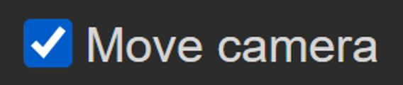

About
OrthoFreeD is a web-based 3D modeling program built specifically for orthotic professionals.
Our team consists of seven software engineers and one team lead, all of whom are computer science majors at Portland State University. We developed this software for Gaffney Orthotics, who is the sponsor of our senior capstone project.
This page contains information about the features available with OrthoFreeD and how you can use them.
Getting Started
Importing Files
OrthoFreeD supports only STL and OBJ files for import and export.
To upload a file to the editor, click on the "Upload File" button in the toolbar. A window will open allowing you to choose the STL or OBJ file you want to edit.
TODO: Address maximum file size, talk about possible errors the user might encounter with this feature and how to avoid them
Exporting Files
Once you are ready to save your file, you can export your model by clicking on the "Export file" button in the toolbar.
The file will be automatically downloaded by your browser to a default location. You can change this location in your browser settings.
Selection
Point
TODO: Add Point selection how-to
Section
TODO: Add section selection how-to
View Controls
Zoom
The zoom function changes the camera perspective to be closer or farther from the model. One way you can access the zoom feature is through the "View" button on the toolbar. In the View menu, there is a "Zoom" button where you can manipulate the zoom percentage.
The second way you can access zoom controls is through the "Move Camera" checkbox on the toolbar. When the checkbox is clicked, mouse camera controls are active and you can zoom in and out by scrolling on the mouse.
Perspective
One way you can adjust the camera position is by adjusting the manual controls located in the "Camera" menu.

From here you can adjust the XYZ position of the camera, as well as the pitch, yaw, and roll.
Another way to adjust the camera position is by checking the "Move camera" box in the toolbar. When this button is checked, you can change the camera position by clicking and dragging over the canvas.
Fullscreen
TODO: Add fullscreen how-to
Editing Tools
Scale
You can scale the model if you would like to internally alter the size of the model in the file. To scale the model, click on the "Edit" button in the toolbar, and under "Scale Model" you can enter the scaling percentage.
Extend
TODO: Add extend how-to
Other
TODO: Add info about back button and any other miscellaneous things